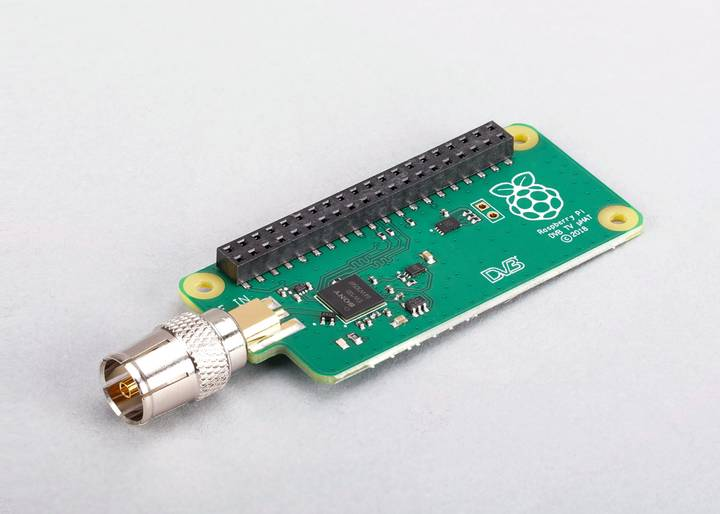

TV HAT overview

Figure 1. The TV HAT
The TV HAT allows you to receive digital terrestrial TV broadcast systems, using an onboard DVB-T and DVB-T2 tuner, on a . With the board you can receive and view TV on a , or create a TV server that allows you to stream received TV over a network to other devices. The TV HAT can be used with any 40-pin board as a server for other devices on the network. Performance when receiving and viewing TV on the device itself can vary, and we recommend using a 2B or later for this purpose
Key features:
- Sentra CXD2880 TV tuner
- Supported TV standards: DVB-T2, DVB-T
- Reception frequency: VHF III, UHF IV, UHF V
Channel bandwidth:
- DVB-T2: 1.7 MHz, 5 MHz, 6 MHz, 7 MHz, 8 MHz
- DVB-T: 5 MHz, 6 MHz, 7 MHz, 8 MHz